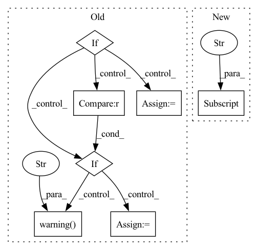

Pattern ID :18024
Before Change
Plotly figure
if m.config_normalization.global_normalization:
if df_name is None:
df_name = "__df__"
else:
log.debug("Global normalization set - ignoring given df_name for normalization")
else:
if df_name is None :
log.warning("Local normalization set, but df_name is None. Using global data params instead." )
df_name = "__df__"
elif df_name not in m.config_normalization.local_data_params:
log.warning(
f"Local normalization set, but df_name "{df_name}" not found. Using global data params instead."After Change
Returns:
Plotly figure
compnents_to_plot = plot_configuration["components_list"]
additive_future_regressors = plot_configuration["additive_future_regressors"]
additive_events = plot_configuration["additive_events"]
multiplicative_future_regressors = plot_configuration["multiplicative_future_regressors"]
multiplicative_events = plot_configuration["multiplicative_events"]In pattern: SUPERPATTERN
Frequency: 3
Non-data size: 7
Instances Fragment ID: 59123396
Project Name: ourownstory/neural_prophet
Commit Name: f54838eba3498c5cc6849884fb296f500a07380f
Time: 2022-11-22
Author: 76744817+LeonieFreisinger@users.noreply.github.com
File Name: neuralprophet/plot_model_parameters_plotly.py
M Class Name: AnonimousClass
N Class Name: AnonimousClass
M Method Name: plot_parameters(8)
N Method Name: plot_parameters(7)
M Parent Class:
N Parent Class:
M File Name: neuralprophet/plot_model_parameters_plotly.py
N File Name: neuralprophet/plot_model_parameters_plotly.py
M Start Line: 747
M End Line: 814
N Start Line: 624
N End Line: 683
Before Change
labels_count = len(set(labels.values))
metrics_dict["Labels count"] = labels_count
if config.compute_silhouette_score:
if config.force_all_populations and (
labels_count < len(model.marker_pop_matrix.index)
) :
log.warning("Not all pops are present. Setting silhouette metric to 0." )
silhouette = 0
else:
silhouette = silhouette_score(X, labels)
metrics_dict["Penalized Silhouette"] = silhouette + labels_count
print("\nComputed metrics:")
for name, value in metrics_dict.items():After Change
p = labels.value_counts(normalize=True).values
neg_log_dir = -np.log(p).sum()
metrics_dict["neg_log_dir"] = neg_log_dir
metrics_dict["Heuristic"] = (n_missing_pop + 1) * dbs * neg_log_dir
Fragment ID: 59123360
Project Name: mics-lab/scyan
Commit Name: b572fca369e5afef9ee4a2e03b671d944f364a4c
Time: 2022-06-10
Author: quentin.blampey@student.ecp.fr
File Name: scripts/utils.py
M Class Name: AnonimousClass
N Class Name: AnonimousClass
M Method Name: compute_metrics(3)
N Method Name: compute_metrics(3)
M Parent Class:
N Parent Class:
M File Name: scripts/utils.py
N File Name: scripts/utils.py
M Start Line: 68
M End Line: 82
N Start Line: 64
N End Line: 80
Before Change
meta.get(f"$P{i + 1}{channel_suffix}", c) for i, c in enumerate(data.columns)
]
if obs_names is None:
obs_names = [
c
for i, c in enumerate(data.columns)
if not f"$P{i + 1}{channel_suffix}" in meta
]
elif c in data.columns for c in obs_names):
log.warning(
f"The following observations were not found: {", ".join([c for c in obs_names if not c in data.columns])}"
)
obs_names = [c for c in obs_names if c in data.columns]
var_names = [c for c in data.columns if not c in obs_names]
After Change
names = pd.Series(
[meta.get(f"$P{i + 1}{channel_suffix}") for i in range(data.shape[1])]
)
fallback_names = [meta[f"$P{i + 1}N"] for i in range(data.shape[1])]
data.columns = np.where(names.isna() | names.duplicated(False), fallback_names, names)
exclude_markers = _check_exlude_markers(data, exclude_markers) Fragment ID: 59123358
Project Name: mics-lab/scyan
Commit Name: a2fbb2c2dddae7f51221c97c797bb2a097afefb7
Time: 2023-03-09
Author: quentin.blampey@student.ecp.fr
File Name: scyan/_io.py
M Class Name: AnonimousClass
N Class Name: AnonimousClass
M Method Name: read_fcs(4)
N Method Name: read_fcs(3)
M Parent Class:
N Parent Class:
M File Name: scyan/_io.py
N File Name: scyan/_io.py
M Start Line: 29
M End Line: 46
N Start Line: 29
N End Line: 55